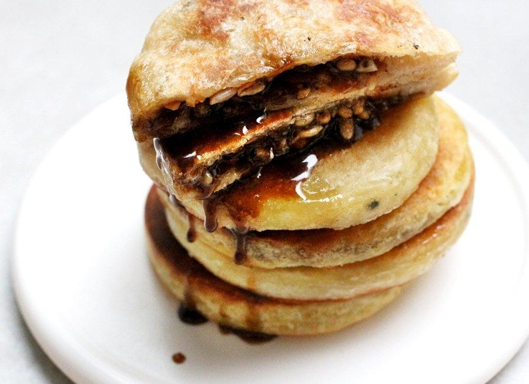
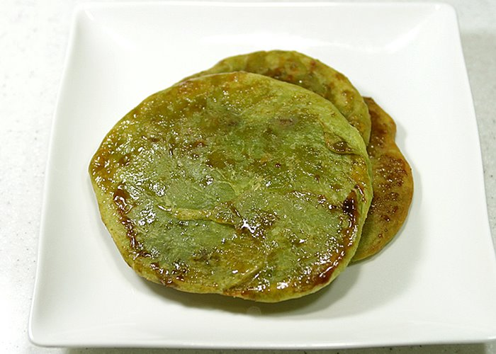
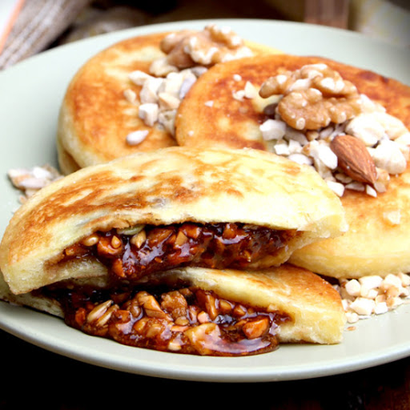
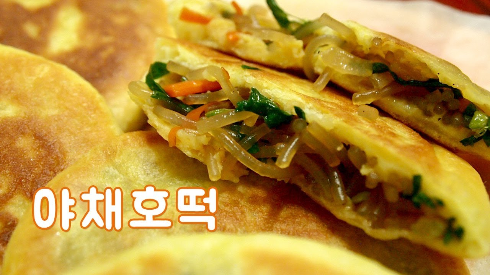
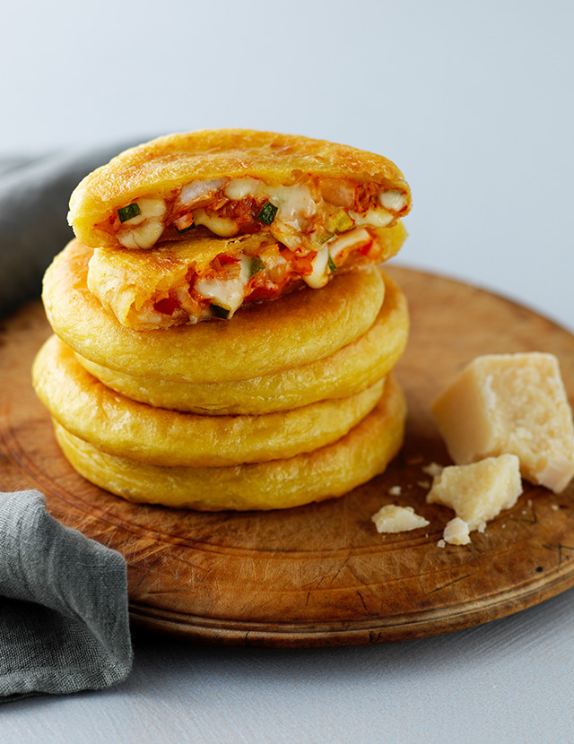
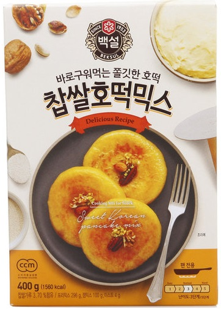

호떡
호떡은 오래전부터 존재해 온 한국의 간식으로, 찹쌀이나 밀가루를 반죽하여 호떡소(안에 넣는 재료)로 흑설탕, 계피가루, 견과류 등을 넣어 납작하게 눌러 기름에 구워낸 음식입니다. 판매처는 주로 시장이나 길거리 가게, 혹은 포장마차 등에서 판매합니다. 매우 뜨겁게 조리되어 나오기 때문에 먹을 때 안에서 흘러나오는 호떡소에 데일 수 있으니 주의해야하며, 이와 같은 특징 때문에 주로 겨울철에 먹는 편입니다.
호떡의 종류로는 '찹쌀호떡', 녹차가루를 반죽에 섞어서 굽는 '녹차호떡', 속을 견과류로 가득 채우고 땅콩가루를 뿌린 '씨앗호떡' 등이 있고 자매품으로 잡채를 넣은 '야채호떡', '피자호떡', '김치호떡' 등도 있습니다.
   호떡을 만드는 방법은 비교적 간단하기 때문에 집에서도 쉽게 만들 수 있습니다. 하지만 재료를 필요한 만큼만 구입할 수 없고, 양을 조절하기가 쉽지 않기 때문에 호떡을 만드는 재료를 모아둔 『호떡믹스』를 구입해서 만들면 보다 쉽고 맛있는 호떡을 만들어 먹을 수 있습니다.
